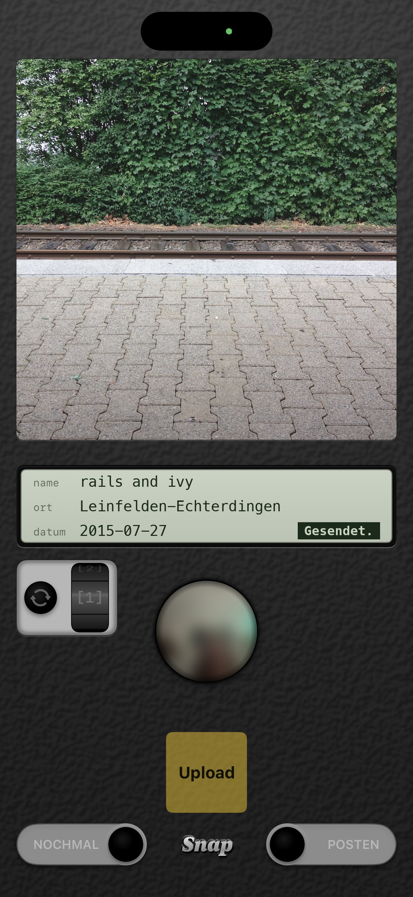

A personal camera, drawn as the back of one. One square in the viewfinder; press the chrome release — the photographer reflected in its face — and the shot fires as you let go. Or say snap. A small LCD shows what the photo will carry — a name suggested by an AI (turn the drum for another), the town, the date. Slide to post: the print leaves the camera.
The photo goes to the library and, with its name and place inside it, to afterworkphotos.com, where it hangs within a minute.
English and German, dark only. Not on the App Store.